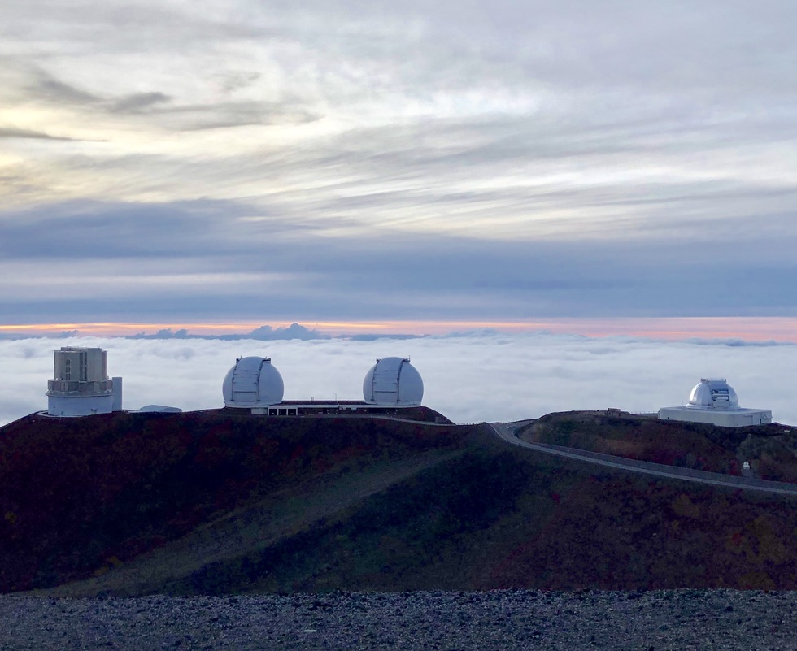
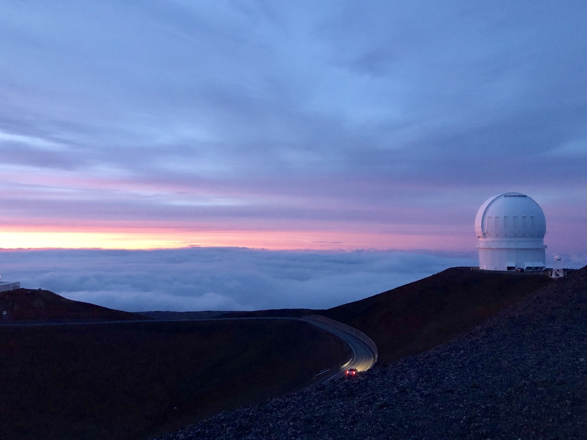
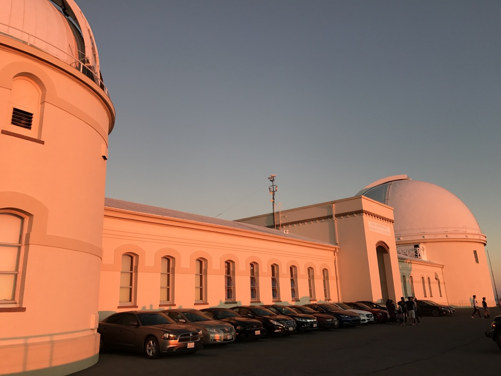
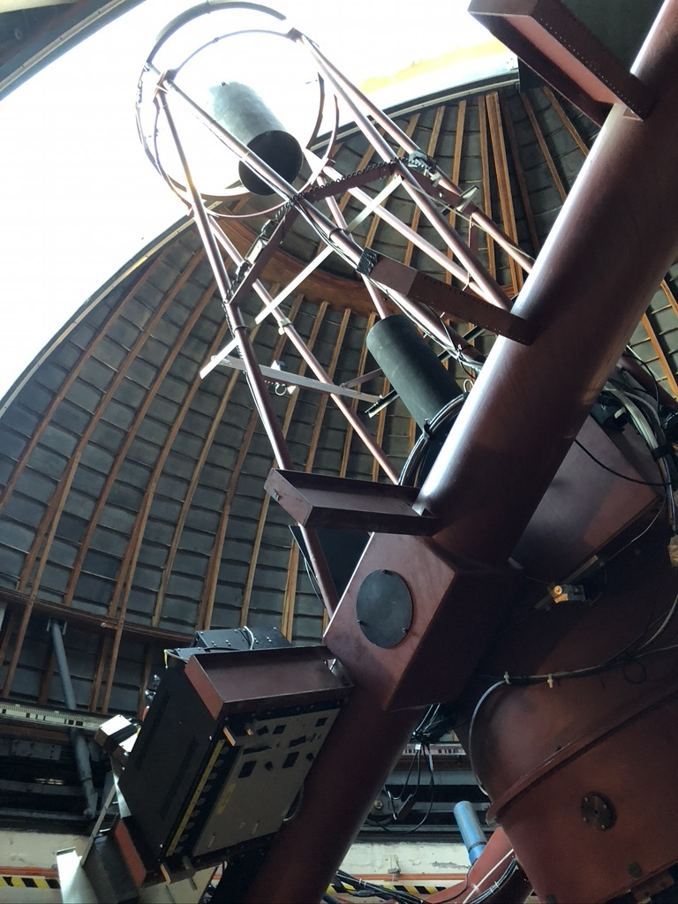
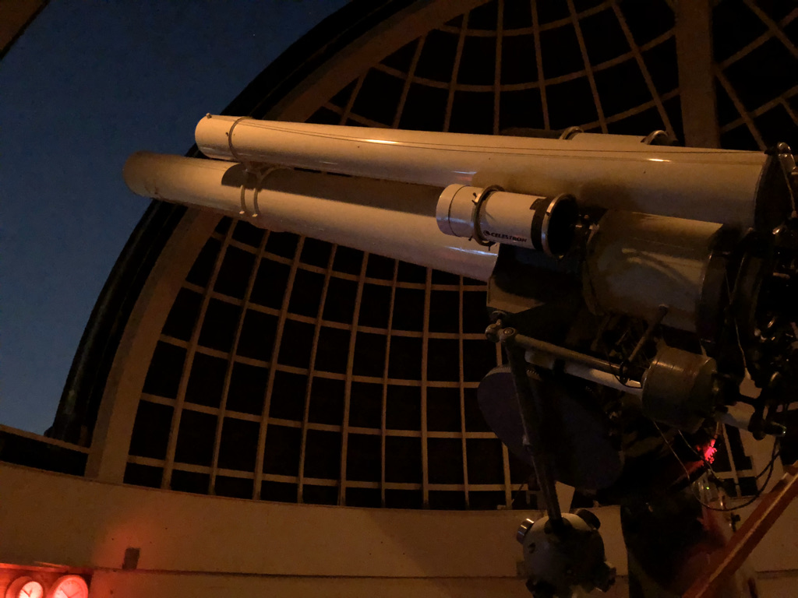
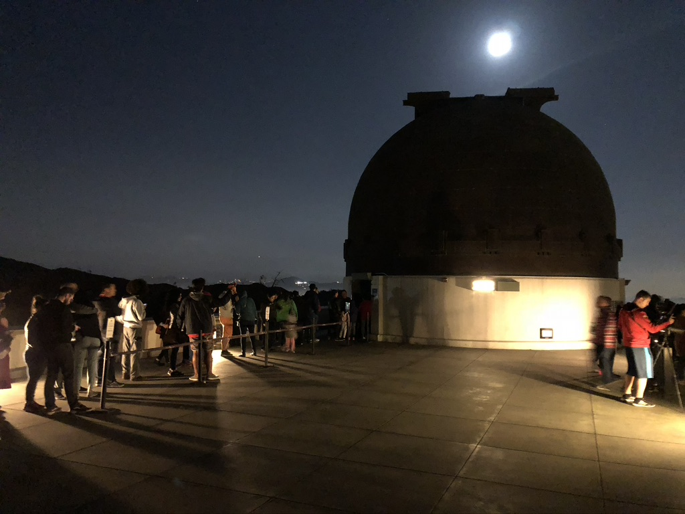

I was fortunate to visit a few research and educational observatories.
Mauna Kea, Big Island, Hawaii

Mauna Kea, Big Island, Hawaii

Lick Observatory, Mount Hamilton, California

120-inch Reflector, Lick Observatory, Mount Hamilton, California

36-inch Great Refractor, Lick Observatory, Mount Hamilton, California

Griffith Observatory, Los Angeles
